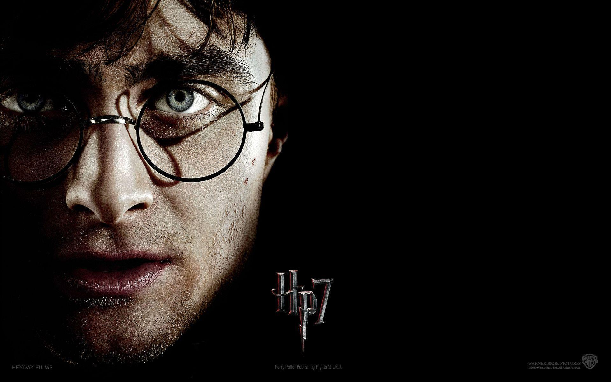
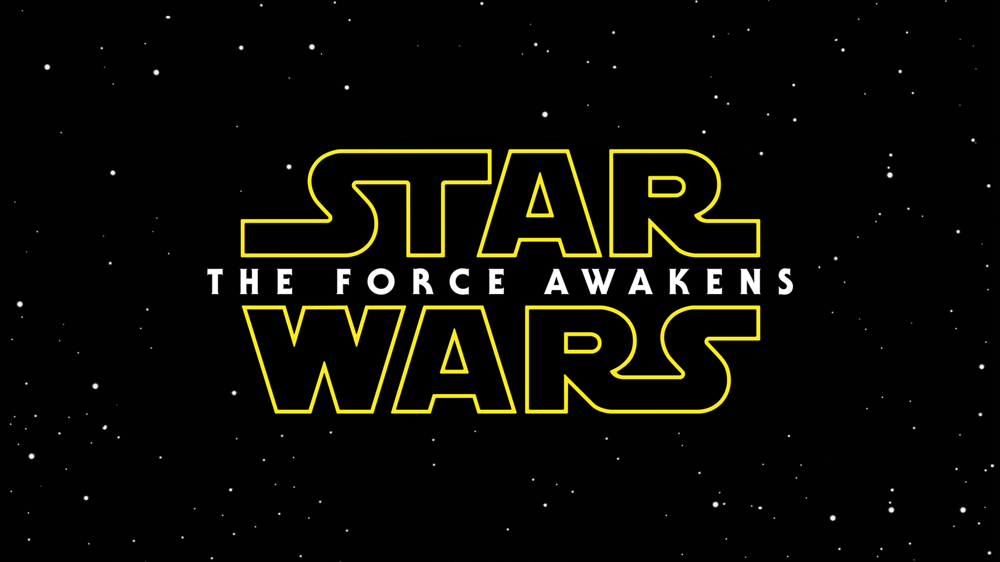

Tay graduated from Vietnam National University and received Bachelor Degree in major of International Economic Relations in August, 2016. Up to now, he has been working in the field of Production at Decathlon Vietnam for nearly two years.
See yourself|  |
Harry PotterThe Harry Potter films have been top-rank box office hits, with all eight releases on the list of highest-grossing films worldwide. Philosopher's Stone was the highest-grossing Harry Potter film up until the release of the final instalment of the series, Deathly Hallows, while Prisoner of Azkaban grossed the least. |
|  |
StarWarsThe film was the first to feature characters introduced in animated Star Wars TV series, namely The Clone Wars' Saw Gerrera, portrayed by Forest Whitaker. The movie received generally positive reviews, with its performances, action sequences, soundtrack, visual effects and darker tone being praised. |
Final DestinationFinal Destination is an American horror franchise composed of five films, comic books and novels. It is based on an unproduced spec script by Jeffrey Reddick , originally written for The X-Files television series, and was distributed by New Line Cinema . |